Proyecto Final#
Al tener como objetivo evaluar cómo las características técnicas de las canciones (ej. energía, bailabilidad, acústica) se correlacionan con la popularidad en Spotify, para identificar patrones que puedan optimizar las estrategias de producción musical para disqueras y artistas.
import pandas as pd
import numpy as np
import matplotlib.pyplot as plt
import seaborn as sns
plt.style.use('ggplot')
%matplotlib inline
sns.set_palette("pastel")
df = pd.read_csv('dataset.csv')
df.head()
| Unnamed: 0 | track_id | artists | album_name | track_name | popularity | duration_ms | explicit | danceability | energy | ... | loudness | mode | speechiness | acousticness | instrumentalness | liveness | valence | tempo | time_signature | track_genre | |
|---|---|---|---|---|---|---|---|---|---|---|---|---|---|---|---|---|---|---|---|---|---|
| 0 | 0 | 5SuOikwiRyPMVoIQDJUgSV | Gen Hoshino | Comedy | Comedy | 73 | 230666 | False | 0.676 | 0.4610 | ... | -6.746 | 0 | 0.1430 | 0.0322 | 0.000001 | 0.3580 | 0.715 | 87.917 | 4 | acoustic |
| 1 | 1 | 4qPNDBW1i3p13qLCt0Ki3A | Ben Woodward | Ghost (Acoustic) | Ghost - Acoustic | 55 | 149610 | False | 0.420 | 0.1660 | ... | -17.235 | 1 | 0.0763 | 0.9240 | 0.000006 | 0.1010 | 0.267 | 77.489 | 4 | acoustic |
| 2 | 2 | 1iJBSr7s7jYXzM8EGcbK5b | Ingrid Michaelson;ZAYN | To Begin Again | To Begin Again | 57 | 210826 | False | 0.438 | 0.3590 | ... | -9.734 | 1 | 0.0557 | 0.2100 | 0.000000 | 0.1170 | 0.120 | 76.332 | 4 | acoustic |
| 3 | 3 | 6lfxq3CG4xtTiEg7opyCyx | Kina Grannis | Crazy Rich Asians (Original Motion Picture Sou... | Can't Help Falling In Love | 71 | 201933 | False | 0.266 | 0.0596 | ... | -18.515 | 1 | 0.0363 | 0.9050 | 0.000071 | 0.1320 | 0.143 | 181.740 | 3 | acoustic |
| 4 | 4 | 5vjLSffimiIP26QG5WcN2K | Chord Overstreet | Hold On | Hold On | 82 | 198853 | False | 0.618 | 0.4430 | ... | -9.681 | 1 | 0.0526 | 0.4690 | 0.000000 | 0.0829 | 0.167 | 119.949 | 4 | acoustic |
5 rows × 21 columns
df.info()
<class 'pandas.core.frame.DataFrame'>
RangeIndex: 114000 entries, 0 to 113999
Data columns (total 21 columns):
# Column Non-Null Count Dtype
--- ------ -------------- -----
0 Unnamed: 0 114000 non-null int64
1 track_id 114000 non-null object
2 artists 113999 non-null object
3 album_name 113999 non-null object
4 track_name 113999 non-null object
5 popularity 114000 non-null int64
6 duration_ms 114000 non-null int64
7 explicit 114000 non-null bool
8 danceability 114000 non-null float64
9 energy 114000 non-null float64
10 key 114000 non-null int64
11 loudness 114000 non-null float64
12 mode 114000 non-null int64
13 speechiness 114000 non-null float64
14 acousticness 114000 non-null float64
15 instrumentalness 114000 non-null float64
16 liveness 114000 non-null float64
17 valence 114000 non-null float64
18 tempo 114000 non-null float64
19 time_signature 114000 non-null int64
20 track_genre 114000 non-null object
dtypes: bool(1), float64(9), int64(6), object(5)
memory usage: 17.5+ MB
df.describe()
| Unnamed: 0 | popularity | duration_ms | danceability | energy | key | loudness | mode | speechiness | acousticness | instrumentalness | liveness | valence | tempo | time_signature | |
|---|---|---|---|---|---|---|---|---|---|---|---|---|---|---|---|
| count | 114000.000000 | 114000.000000 | 1.140000e+05 | 114000.000000 | 114000.000000 | 114000.000000 | 114000.000000 | 114000.000000 | 114000.000000 | 114000.000000 | 114000.000000 | 114000.000000 | 114000.000000 | 114000.000000 | 114000.000000 |
| mean | 56999.500000 | 33.238535 | 2.280292e+05 | 0.566800 | 0.641383 | 5.309140 | -8.258960 | 0.637553 | 0.084652 | 0.314910 | 0.156050 | 0.213553 | 0.474068 | 122.147837 | 3.904035 |
| std | 32909.109681 | 22.305078 | 1.072977e+05 | 0.173542 | 0.251529 | 3.559987 | 5.029337 | 0.480709 | 0.105732 | 0.332523 | 0.309555 | 0.190378 | 0.259261 | 29.978197 | 0.432621 |
| min | 0.000000 | 0.000000 | 0.000000e+00 | 0.000000 | 0.000000 | 0.000000 | -49.531000 | 0.000000 | 0.000000 | 0.000000 | 0.000000 | 0.000000 | 0.000000 | 0.000000 | 0.000000 |
| 25% | 28499.750000 | 17.000000 | 1.740660e+05 | 0.456000 | 0.472000 | 2.000000 | -10.013000 | 0.000000 | 0.035900 | 0.016900 | 0.000000 | 0.098000 | 0.260000 | 99.218750 | 4.000000 |
| 50% | 56999.500000 | 35.000000 | 2.129060e+05 | 0.580000 | 0.685000 | 5.000000 | -7.004000 | 1.000000 | 0.048900 | 0.169000 | 0.000042 | 0.132000 | 0.464000 | 122.017000 | 4.000000 |
| 75% | 85499.250000 | 50.000000 | 2.615060e+05 | 0.695000 | 0.854000 | 8.000000 | -5.003000 | 1.000000 | 0.084500 | 0.598000 | 0.049000 | 0.273000 | 0.683000 | 140.071000 | 4.000000 |
| max | 113999.000000 | 100.000000 | 5.237295e+06 | 0.985000 | 1.000000 | 11.000000 | 4.532000 | 1.000000 | 0.965000 | 0.996000 | 1.000000 | 1.000000 | 0.995000 | 243.372000 | 5.000000 |
El dataset tiene 114,000 canciones con 21 variables y métricas de popularidad. Como pequeños hallazgos notables en este descriptivo es que la popularidad tiene un sesgo hacia valores bajos, con una media de 33.24/100 (±22.31) y mediana de 35. Con este descriptivo vamos a llevar a cabo los pasos para identificar la características de las canciones exitosas dependiendo de la variable Popularidad y con estos resultados dar las recomendaciones específicas.
Al encontrar una alerta de posibles nulos y duplicados, hacemos un tratamiento más detallado de ellos.
print("\nValores nulos por columna:")
print(df.isnull().sum())
# Eliminamos columna innecesaria si existe
if 'Unnamed: 0' in df.columns:
df.drop('Unnamed: 0', axis=1, inplace=True)
# Verificamos duplicados
print("\nNúmero de duplicados:", df.duplicated().sum())
# Eliminar duplicados si los hay
df = df.drop_duplicates()
# Verificar valores únicos en las columnas categóricas
print("\nValores únicos en track_genre:", df['track_genre'].nunique())
print(df['track_genre'].value_counts().head(10))
Valores nulos por columna:
Unnamed: 0 0
track_id 0
artists 1
album_name 1
track_name 1
popularity 0
duration_ms 0
explicit 0
danceability 0
energy 0
key 0
loudness 0
mode 0
speechiness 0
acousticness 0
instrumentalness 0
liveness 0
valence 0
tempo 0
time_signature 0
track_genre 0
dtype: int64
Número de duplicados: 450
Valores únicos en track_genre: 114
track_genre
acoustic 1000
emo 1000
rock-n-roll 1000
reggaeton 1000
disco 1000
r-n-b 1000
punk-rock 1000
pagode 1000
electronic 1000
mpb 1000
Name: count, dtype: int64
Encontramos en la base 3 nulos que debemos tratar para así observar mejor los datos:
for col in ['artists', 'album_name', 'track_name']:
df[col] = df[col].fillna(f"Missing_{col}")
print(df.isnull().sum())
track_id 0
artists 0
album_name 1
track_name 1
popularity 0
duration_ms 0
explicit 0
danceability 0
energy 0
key 0
loudness 0
mode 0
speechiness 0
acousticness 0
instrumentalness 0
liveness 0
valence 0
tempo 0
time_signature 0
track_genre 0
dtype: int64
track_id 0
artists 0
album_name 0
track_name 1
popularity 0
duration_ms 0
explicit 0
danceability 0
energy 0
key 0
loudness 0
mode 0
speechiness 0
acousticness 0
instrumentalness 0
liveness 0
valence 0
tempo 0
time_signature 0
track_genre 0
dtype: int64
track_id 0
artists 0
album_name 0
track_name 0
popularity 0
duration_ms 0
explicit 0
danceability 0
energy 0
key 0
loudness 0
mode 0
speechiness 0
acousticness 0
instrumentalness 0
liveness 0
valence 0
tempo 0
time_signature 0
track_genre 0
dtype: int64
Analizamos Datos Atípicos:
# Librerias necesarias
from sklearn.preprocessing import StandardScaler
from sklearn.decomposition import PCA
from sklearn.ensemble import RandomForestRegressor
import warnings
warnings.filterwarnings("ignore", category=UserWarning)
warnings.filterwarnings("ignore", category=FutureWarning)
def plot_outliers(df, columns):
plt.figure(figsize=(15, 20))
for i, col in enumerate(columns):
plt.subplot(5, 4, i+1)
sns.boxplot(y=df[col])
plt.title(f'Boxplot de {col}')
plt.tight_layout()
plt.show()
numeric_cols = df.select_dtypes(include=['int64', 'float64']).columns
plot_outliers(df, numeric_cols)
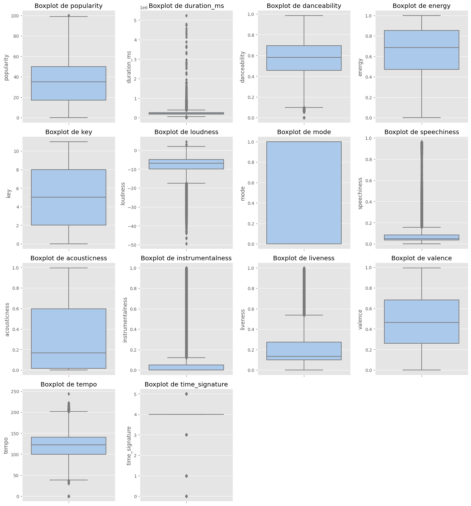
Haciendo un analisis de cada una de las variables con base a los boxplots de Outliers es, primero, duración (en milisegundos) es que hay canciones que duran más que 5,000,000 ms, siendo aproximadamente unos 83 minutos, algo excepcional.
Segundo, la instrumentalidad las canciones con más popularidad no son 100% instrumentales porque la mayoría, siendo el 75%, está por debajo de aproximadamente 0.049.
Y tercero, el compás (time_signature), casi el 100% está en 4/4, lo que significa que todas las canciones de la mayoría de géneros comparten un mismo compás pues influye en que todas empiencen igual. Se haría un estudio de la historia de esta variable desde tiempos antiguos pues no tiene un cambio en las canciones sin importar su género.
# Normalidad Kolmogrov
from scipy.stats import kstest
numeric_cols = df.select_dtypes(include=['int64', 'float64']).columns
results = []
for col in numeric_cols:
data = df[col].dropna() # Eliminar NA
if len(data) > 0:
mean, std = data.mean(), data.std()
ks_stat, p_value = kstest(data, 'norm', args=(mean, std))
results.append({
'Variable': col,
'N muestras': len(data),
'KS Statistic': ks_stat,
'p-value': p_value,
'Normal (α=0.05)': p_value > 0.05
})
results_df = pd.DataFrame(results)
print("\n=== Resultados KS (Datos Originales, sin Imputación) ===")
print(results_df.to_string(index=False))
non_normal_vars = results_df[results_df['Normal (α=0.05)'] == False]['Variable'].tolist()
print("\nVariables NO normales (p < 0.05):", non_normal_vars)
=== Resultados KS (Datos Originales, sin Imputación) ===
Variable N muestras KS Statistic p-value Normal (α=0.05)
popularity 113550 0.087285 0.000000e+00 False
duration_ms 113550 0.126856 0.000000e+00 False
danceability 113550 0.032712 5.333600e-106 False
energy 113550 0.077317 0.000000e+00 False
key 113550 0.134937 0.000000e+00 False
loudness 113550 0.125070 0.000000e+00 False
mode 113550 0.412280 0.000000e+00 False
speechiness 113550 0.280316 0.000000e+00 False
acousticness 113550 0.172907 0.000000e+00 False
instrumentalness 113550 0.394205 0.000000e+00 False
liveness 113550 0.200507 0.000000e+00 False
valence 113550 0.047247 1.021882e-220 False
tempo 113550 0.040474 4.628683e-162 False
time_signature 113550 0.497371 0.000000e+00 False
Variables NO normales (p < 0.05): ['popularity', 'duration_ms', 'danceability', 'energy', 'key', 'loudness', 'mode', 'speechiness', 'acousticness', 'instrumentalness', 'liveness', 'valence', 'tempo', 'time_signature']
Al darnos cuenta que no son normales, se hizo una imputación de los datos con la media como medida para evaluar simetría de ciertos datos. Pero fuera de este EDA se hizo tal evaluación y no dieron normales, por lo cual nos dio indicios de problemas con los Outliers.
# Distribución de todas las variables
import warnings
warnings.filterwarnings("ignore", category=UserWarning)
warnings.filterwarnings("ignore", category=FutureWarning)
def plot_distributions(df, columns):
plt.figure(figsize=(15, 20))
for i, col in enumerate(columns):
plt.subplot(5, 4, i+1)
sns.histplot(df[col], kde=True)
plt.title(f'Distribución de {col}')
plt.tight_layout()
plt.show()
numeric_cols = df.select_dtypes(include=['int64', 'float64']).columns
plot_distributions(df, numeric_cols)
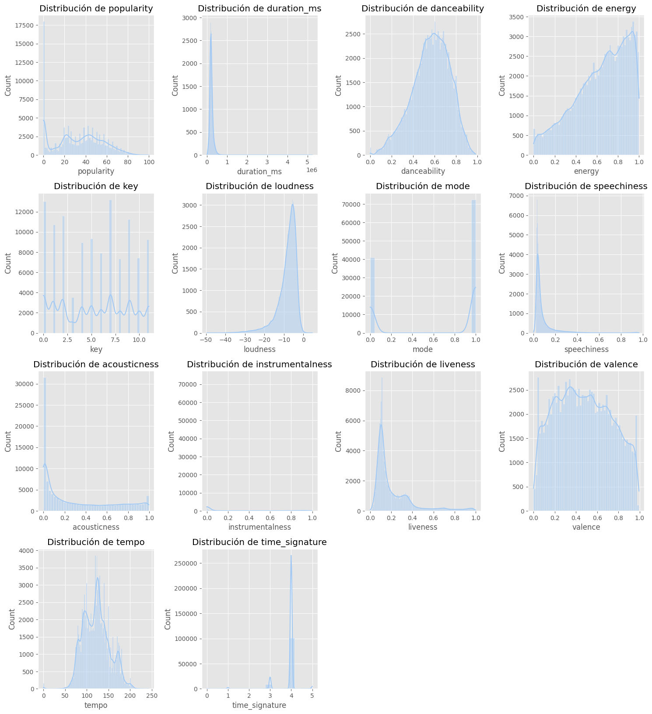
Por lo visto en las gráficas podemos visualizar que para la popularidad solo un pequeña subida, es decir, pocas canciones alcanzan alta popularidad.
En cuanto a la duración de las canciones la mayoría dura entre 2-4 minutos.
Para la variable Key no se ve una preferencia por alguna tonalidad en general.
En volumen podemos inferir que las canciones más escuchadas y que alcanzan un pico alto están entre -6 a -4 dB.
Las canciones más bailables tienen un ritmo por encima de (aprox.) 0.45 y y son más comunes la que tienen una alta energía, un tanto mayor a 0.7, como las playlist de ejercicio para los centros educativos o GYMs.
En cuanto a la acústica se ve un pico en 0 y entre 0.8 a 1, lo cual significa que el sonido debe ser puro. Y en las instrumentales no hay un pico significativo desde los 0.5, por lo cual son pocas canciones que lo tienen.
En la variable Tempo la mayoría de las canciones tienen un número de pulsaciones o latidos entre los 100 BPM A 140 BPM.
Como nuestra variable predictora es la popularidad de las canciones, atribuimos a fondo su investigación y repercusión en el estudio de nuestro Analisis Exploratorio. Por ello vemos de cerca su distribución:
# Análisis de la distribución de Popularidad
plt.figure(figsize=(10, 6))
sns.histplot(df['popularity'], bins=30, kde=True)
plt.title('Distribución de Popularidad de las Canciones')
plt.xlabel('Popularidad')
plt.ylabel('Frecuencia')
plt.show()
# Estadísticas descriptivas de popularity
print("\nEstadísticas de popularidad:")
print(df['popularity'].describe())
# Boxplot de popularity
plt.figure(figsize=(8, 5))
sns.boxplot(y=df['popularity'])
plt.title('Boxplot de Popularidad')
plt.show()

Estadísticas de popularidad:
count 113550.000000
mean 33.324139
std 22.283976
min 0.000000
25% 17.000000
50% 35.000000
75% 50.000000
max 100.000000
Name: popularity, dtype: float64

De acuerdo con el gráfico de distribución podemos notar que la mayoría de las canciones tienen popularidad menos que 60, después decae, por lo cual son muy pocas las canciones que llegan a tener una alta popularidad, y por su descriptivo se confirma una asimetría con cola a la derecha, es decir, muchos atípicos mayores a 50 y son los que más rapido llegan a tener una gran popularidad.
import matplotlib.pyplot as plt
popularity_by_genre = df.groupby('track_genre')['popularity'].mean().sort_values(ascending=False)
plt.figure(figsize=(12, 6))
popularity_by_genre.head(10).plot(kind='bar')
plt.title('Top 10 Géneros con Mayor Popularidad')
plt.xlabel('Género Musical')
plt.ylabel('Popularity (mediana)')
plt.xticks(rotation=45)
plt.show()
plt.figure(figsize=(12, 6))
popularity_by_genre.tail(10).plot(kind='bar')
plt.title('Top 10 Géneros con Menor Popularidad')
plt.xlabel('Género Musical')
plt.ylabel('Popularidad (mediana)')
plt.xticks(rotation=45)
plt.show()
# Boxplot para los principales géneros
top_genres = popularity_by_genre.head(10).index
df_top_genres = df[df['track_genre'].isin(top_genres)]
plt.figure(figsize=(14, 8))
sns.boxplot(x='track_genre', y='popularity', data=df_top_genres,
showmeans=True, # Esto muestra la media como un marcador
meanprops={"marker":"o", # Forma del marcador
"markerfacecolor":"white", # Color interno
"markeredgecolor":"black", # Color del borde
"markersize":"10"}) # Tamaño
plt.title('Distribución de Popularidad por Género (Top 10)')
plt.xlabel('Género Musical')
plt.ylabel('Popularidad')
plt.xticks(rotation=45)
plt.show()
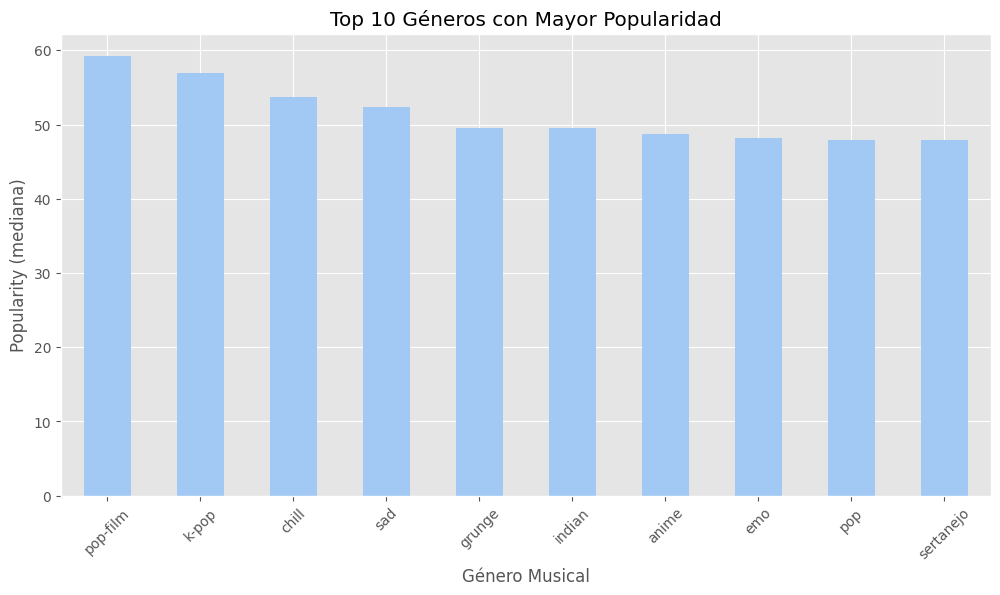
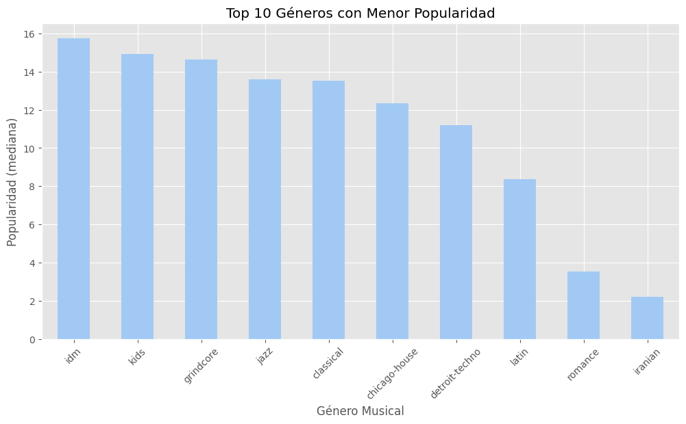
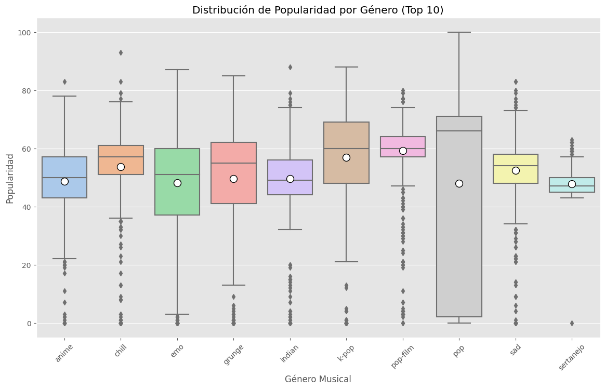
Analizando el Top de los 10 géneros con mayor popularidad vemos preferencias en estos géneros:
Pop
K-pop
Pop-film
Dance-pop
Por lo cual para las disqueras se les recomienda invertir más en estos géneros.
Mientras que en el top de los 10 géneros con menor popularidad como el Grimbton, Kids, Classical e Iranian tiene un bajo rendimiento en Spotify, por lo cual se les recomienda usar otras app o páginas que los impulsen.
Y en la distribución de popularidad por género el K-pop mtiene alta popularidad y algunos temas de géneros menos populares como señanajo logran alta popularidad.
# Calcular la matriz de correlación
spotify_num = df.select_dtypes(include=np.number)
corr = spotify_num.corr()
print("Matriz de correlación:", corr.shape)
# Crear la máscara para ocultar la mitad superior
mask = np.zeros_like(corr)
mask[np.triu_indices_from(mask)] = True
# Configurar el estilo y mostrar el mapa de calor
sns.set(font_scale=1.2)
plt.figure(figsize=(16, 14))
sns.heatmap(corr, mask=mask, cmap='Reds', annot=True, fmt='.2f', annot_kws={"size": 12}, cbar=True)
plt.title("Matriz de Correlación - Dataset de Spotify", fontsize=16)
plt.tight_layout()
plt.show()
Matriz de correlación: (14, 14)

Aquí podemos ver las correlaciones más significativas entre variables como la energía y volumen pues muchas canciones energéticas tienden a tener un alto volumen.
Tambien entre la acástica y la energía con Volumen pues al ser más “movidas” contienen una acústica más alta.
Mientras la popularidad, siendo nuestra variable predictora, tiene correlaciones medias con las anteriormente mencionadas pues las canciones populares tienden a ser más altas en volumen pero algunas con acústicas son menos populares.
Y las correlaciones más bajas, siendo entre variables como Key, time_signature y tempo no influye en la popularidad de las canciones.
Al evaluar estos comportamientos, hicimos un análisis PCA para ver más detalladamente la variabilidad de estas variables:
# Análisis PCA
numeric_df = df.select_dtypes(include=['float64', 'int64']).drop(['key', 'mode', 'time_signature'], axis=1)
numeric_df = numeric_df.fillna(numeric_df.mean())
# Estandarización
scaler = StandardScaler()
scaled_data = scaler.fit_transform(numeric_df)
pca = PCA()
pca_result = pca.fit_transform(scaled_data)
plt.figure(figsize=(10, 6))
plt.plot(range(1, len(pca.explained_variance_ratio_)+1),
pca.explained_variance_ratio_.cumsum(), marker='o')
plt.title('Varianza explicada acumulada por componentes PCA')
plt.xlabel('Número de componentes')
plt.ylabel('Varianza explicada acumulada')
plt.grid(True)
plt.show()
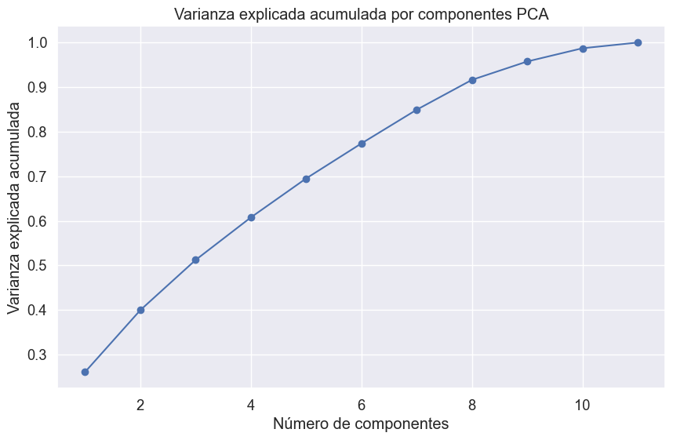
Viendo este patrón junto con los datos musicales volvimos a ver la correlación entre la energía y el volumen, correlacionado y relación entre bailabilidad y positividad (valence).
# Analisis VIF
from statsmodels.stats.outliers_influence import variance_inflation_factor
from sklearn.preprocessing import StandardScaler
# Seleccionar solo las columnas numéricas
spotify_num = df.select_dtypes(include=np.number)
# Eliminar columnas que no tienen suficiente varianza (opcional)
spotify_num = spotify_num.dropna(axis=1) # Por si hay columnas con NaN
# Escalar los datos antes de calcular VIF
scaler = StandardScaler()
spotify_scaled = scaler.fit_transform(spotify_num)
# Calcular el VIF para cada variable
vif_data = pd.DataFrame()
vif_data["Variable"] = spotify_num.columns
vif_data["VIF"] = [variance_inflation_factor(spotify_scaled, i) for i in range(spotify_scaled.shape[1])]
# Mostrar el resultado
print(vif_data.sort_values(by="VIF", ascending=False))
Variable VIF
3 energy 4.249848
5 loudness 3.269293
8 acousticness 2.407126
11 valence 1.586171
2 danceability 1.540188
9 instrumentalness 1.474825
10 liveness 1.142463
7 speechiness 1.132767
12 tempo 1.091453
13 time_signature 1.080963
1 duration_ms 1.055228
6 mode 1.042076
0 popularity 1.023728
4 key 1.021432
Podemos notar que todas las variables tienen un valor VIF entre 1 a 5, lo que indica que no hay problemas graves de multicolinealidad.
Luego, hicimos una analisis de correlación más a fondo de nuestra variable predictora:
# Correlaciones con popularidad
plt.figure(figsize=(12, 8))
corr = numeric_df.corr()['popularity'].sort_values(ascending=False)[1:]
sns.barplot(y=corr.index, x=corr.values)
plt.title('Correlación con Popularidad')
plt.show()
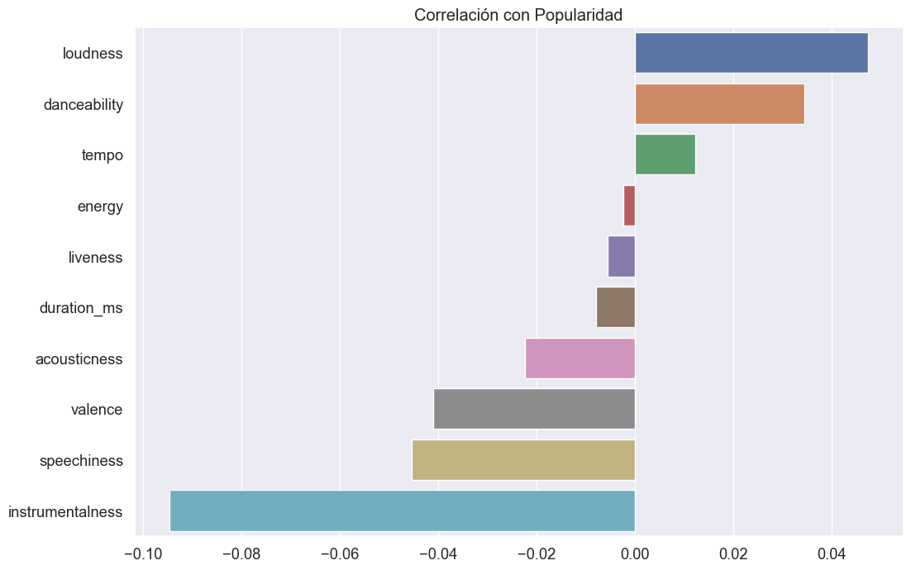
Visto en el gráfico, volvemos a ver más de cerca una mayor correlación con nuestra variable predictora con:
Volumen
Bailabilidad
Energía
Es decir, canciones que contengas un mayor volumen y que contengan ritmos bailables producen una mayor energía y, asimismo, una mayor popularidad para el público en general.
Para las variables tempo, vivacidad y duración influyen poco en que las canciones tengan una popularidad alta, pero son vitales para que se mantengan en los tops.
Y por último, en variables como la acústica y la instrumentalidad no influyen significativamente en la popularidad de una canción, por lo cual no es recomendable que se hagan mayormente canciones puramente instrumentales pues son poco atractivas.
Dejando de lado la popularidad, indagamos más en la influencia de los artistas:
# Análisis de artistas
top_artists = df['artists'].value_counts().head(20)
plt.figure(figsize=(12, 8))
sns.barplot(y=top_artists.index, x=top_artists.values)
plt.title('Top 20 artistas con más canciones')
plt.xlabel('Número de canciones')
plt.ylabel('Artista')
plt.show()
artist_popularity = df.groupby('artists')['popularity'].median().sort_values(ascending=False).head(20)
plt.figure(figsize=(12, 8))
sns.barplot(y=artist_popularity.index, x=artist_popularity.values)
plt.title('Top 20 artistas por popularidad (mediana)')
plt.xlabel('Popularidad (mediana)')
plt.ylabel('Artista')
plt.tight_layout()
plt.show()
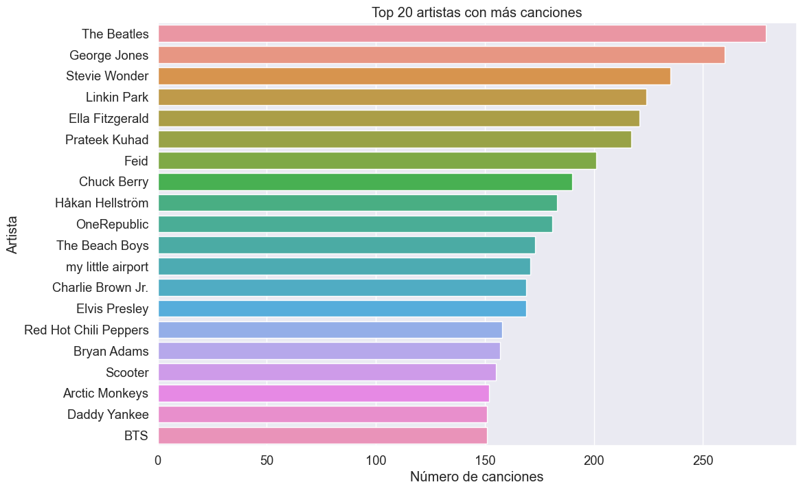
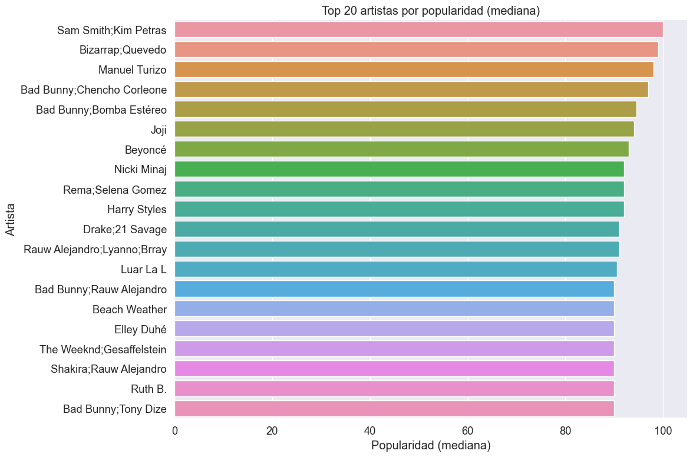
Algunas características del top de artistas con más canciones son:
The Beatles: lideran con aprox. 250 canciones
George Jones
Stevie Wonder
Y artistas nuevos como BTS llegan al top dando una revolución e impacto global en la música.
Pero algo interesante es que la cantidad de canciones no influye en su popularidad pues hay artistas como Bad Bunny que tiene menos canciones que The Beatles, pero tiene una mayor popularidad.
En el top de artistas por popularidad tenemos a Bad Bunny, The Weeknd, Beyoncé, Harry Styles, por lo cual música actual tiene una mezcla de estos géneros: reggaetón, pop y electrónica.
También las colaboraciones entre artistas aumentan la posibilidad de llegar a tener mayor popularidad, como los dúos.
Y como características de estos artistas es que tienen más sencillos que albumen largos, por lo que las disqueras pueden aumentar su popularidad cambiando esta estrategia comercial a una disco más corto. Por lo que las disqueras podrían priorizar lanzamientos de sencillos en lugar de álbumes largos.
# Boxplot por género
plt.figure(figsize=(15, 8))
top_genres = df['track_genre'].value_counts().head(15).index
sns.boxplot(data=df[df['track_genre'].isin(top_genres)],
x='track_genre', y='popularity')
plt.title('Distribución de popularidad por género')
plt.xticks(rotation=45)
plt.show()
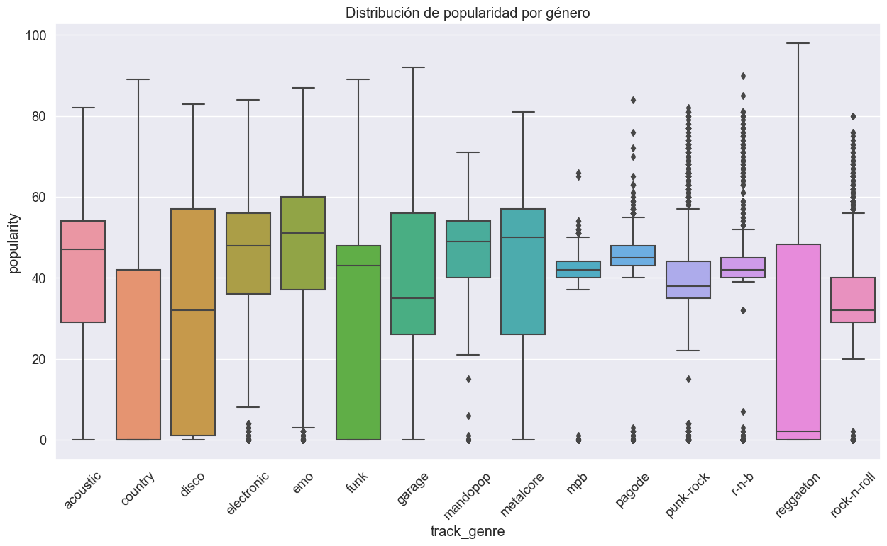
Podemos observar que géneros como acoustic, disco, emo, electronic, funk y metalcore tienen una mediana alta casi llegando a 50. También géneros como mandopop, metalcore, garage tienen una distribución muy amplia, lo que indica que hay canciones muy populares y otras poco populares.
Mientras que el reggaeton tieen alta variabilidad y outliers hacia arriba, por lo cual hay excepciones, es decir, canciones que alcanzan más popularidad que el promedio.
Y por géneros como mpb, pagode, punk-rock, r&b, electronic y funk tienen cajas muy estrechas, es decir, una popularidad sin muchos cambios a lo largo de estas canciones.
Por lo tanto, un género único o primordial no existe porque hay una variabilidad alta y extensa que una competencia en cómo llegar a tener canciones populares..
Luego abarcamos los contenidos explícitos de algunos albumes de estos artistas y en cómo afecta su la popularidad en las listas. Además, evaluamos la bailabilidad y la energía de estas canciones y que pueden influir en alcanzar una mayor popularidad:
# Popularidad por género y explicit content
plt.figure(figsize=(14, 8))
sns.boxplot(x='track_genre', y='popularity', hue='explicit',
data=df[df['track_genre'].isin(top_genres)])
plt.title('Popularidad por Género y Contenido Explícito')
plt.xlabel('Género Musical')
plt.ylabel('Popularidad')
plt.xticks(rotation=45)
plt.legend(title='Explícito')
plt.show()
# Relación entre popularity, danceability y energy
plt.figure(figsize=(10, 8))
sns.scatterplot(x='danceability', y='energy', size='popularity',
hue='popularity', data=df, alpha=0.6, sizes=(20, 200))
plt.title('Relación entre Danceability, Energy y Popularidad')
plt.show()
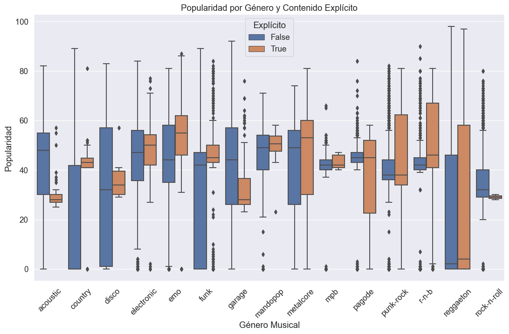

Algunas repercuciones en el cotenido explicito de algunas canciones y su popularidad sí están relacionadas pues las canciones explícitas tienden a ser más populares, como podemos ver en géneros como emo, metalcore, reggaeton r-n-b pues tienen una mediana más alta que las no explícitas, contrario al caso de los géneros mpb y pagode, que no muestran ningún hallazgo de temas explícitos y los no explícitos.
Mientras que para géneros como acoustic, disco, garage y rock-n-roll no son muy populares por sus temas explícitos.
Y géneros como funk, mandopop, punk-rock y country no tienen diferencias marcadas entre sus canciones explícitas y las no explícitas.
Por tanto, la presencia de contenido explícito puede generar un aumento en la popularidad de la canción pero se sigue viendo una variabilidad en los géneros afecta mucho que resurgan este tipo de vocabulario.
En cuanto a la relación entre la bailabilidad y la energía muchas canciones tienden a ser tanto bailables como energéticas pues, como dijimos antes, hay una correlación entre alta energía y bailabilidad con alta popularidad.
Pero existen canciones con baja energía o bailabilidad que también logran buena popularidad en el centro de la gráfica, por lo que no son factores exclusivos pero si influyen significativamente en que tengan una mayor popularidad.
Como último esquema del EDA, vamos a hacer un análisis de Regresión logística
from sklearn.model_selection import train_test_split
from sklearn.preprocessing import StandardScaler
from sklearn.linear_model import LogisticRegression
from sklearn.metrics import (
confusion_matrix, classification_report, accuracy_score,
precision_score, recall_score, f1_score, roc_auc_score,
roc_curve, precision_recall_curve
)
import joblib
from IPython.display import display
features = ['danceability', 'energy', 'valence', 'tempo', 'acousticness']
df['popular'] = (df['popularity'] >= 70).astype(int)
X = df[features].copy()
y = df['popular'].copy()
X_train, X_test, y_train, y_test = train_test_split(
X, y, test_size=0.2, random_state=42, stratify=y
)
scaler = StandardScaler()
X_train_scaled = scaler.fit_transform(X_train)
X_test_scaled = scaler.transform(X_test)
model = LogisticRegression(max_iter=3000, class_weight='balanced', random_state=42)
model.fit(X_train_scaled, y_train)
joblib.dump(model, "logistic_model_class_weight_balanced.joblib")
joblib.dump(scaler, "scaler.joblib")
y_pred = model.predict(X_test_scaled)
y_proba = model.predict_proba(X_test_scaled)[:,1]
acc = accuracy_score(y_test, y_pred)
prec = precision_score(y_test, y_pred, zero_division=0)
rec = recall_score(y_test, y_pred, zero_division=0)
f1 = f1_score(y_test, y_pred, zero_division=0)
roc = roc_auc_score(y_test, y_proba)
print("=== Logistic Regression (class_weight='balanced') ===")
print(f"Accuracy: {acc:.4f}")
print(f"Precision: {prec:.4f}")
print(f"Recall: {rec:.4f}")
print(f"F1 Score: {f1:.4f}")
print(f"AUC-ROC: {roc:.4f}")
print("\nConfusion Matrix:\n", confusion_matrix(y_test, y_pred))
print("\nClassification Report:\n", classification_report(y_test, y_pred, zero_division=0))
fpr, tpr, roc_thresh = roc_curve(y_test, y_proba)
precisions, recalls, pr_thresh = precision_recall_curve(y_test, y_proba)
plt.figure(figsize=(12,5))
plt.subplot(1,2,1)
plt.plot(fpr, tpr, label=f'AUC = {roc:.3f}')
plt.plot([0,1],[0,1],'--', color='gray')
plt.xlabel('FPR')
plt.ylabel('TPR (Recall)')
plt.title('ROC Curve')
plt.legend()
plt.subplot(1,2,2)
plt.plot(recalls, precisions)
plt.xlabel('Recall')
plt.ylabel('Precision')
plt.title('Precision-Recall Curve')
plt.tight_layout()
plt.show()
thresholds = np.linspace(0.01, 0.99, 99)
metrics = []
for thr in thresholds:
y_pred_thr = (y_proba >= thr).astype(int)
metrics.append({
'threshold': thr,
'accuracy': accuracy_score(y_test, y_pred_thr),
'precision': precision_score(y_test, y_pred_thr, zero_division=0),
'recall': recall_score(y_test, y_pred_thr, zero_division=0),
'f1': f1_score(y_test, y_pred_thr, zero_division=0)
})
metrics_df = pd.DataFrame(metrics)
print("\nTop 5 thresholds según F1:")
display(metrics_df.sort_values('f1', ascending=False).head(5))
plt.figure(figsize=(10,5))
plt.plot(metrics_df['threshold'], metrics_df['precision'], label='Precision')
plt.plot(metrics_df['threshold'], metrics_df['recall'], label='Recall')
plt.plot(metrics_df['threshold'], metrics_df['f1'], label='F1')
plt.xlabel('Threshold')
plt.ylabel('Score')
plt.legend()
plt.title('Precision / Recall / F1 vs Threshold')
plt.show()
coef = model.coef_.ravel()
odds_ratio = np.exp(coef)
coef_df = pd.DataFrame({
'feature': features,
'coef': coef,
'odds_ratio': odds_ratio
}).sort_values(by='odds_ratio', key=lambda s: abs(s - 1), ascending=False)
print("\nCoeficientes y Odds Ratios (ordenados por efecto):")
display(coef_df)
best_f1_row = metrics_df.loc[metrics_df['f1'].idxmax()]
print(f"\nMejor umbral por F1: {best_f1_row['threshold']:.3f} con F1={best_f1_row['f1']:.3f}")
rec80 = metrics_df[metrics_df['recall'] >= 0.8]
if not rec80.empty:
chosen = rec80.sort_values('precision', ascending=False).iloc[0]
print("Ejemplo de umbral con recall ≥ 0.8:", chosen.to_dict())
else:
print("No hay umbral que logre recall ≥ 0.8 sin sacrificar demasiada precisión.")
metrics_df.to_csv("threshold_metrics.csv", index=False)
coef_df.to_csv("logistic_coef_odds.csv", index=False)
=== Logistic Regression (class_weight='balanced') ===
Accuracy: 0.5525
Precision: 0.0664
Recall: 0.6344
F1 Score: 0.1202
AUC-ROC: 0.6165
Confusion Matrix:
[[11853 9763]
[ 400 694]]
Classification Report:
precision recall f1-score support
0 0.97 0.55 0.70 21616
1 0.07 0.63 0.12 1094
accuracy 0.55 22710
macro avg 0.52 0.59 0.41 22710
weighted avg 0.92 0.55 0.67 22710
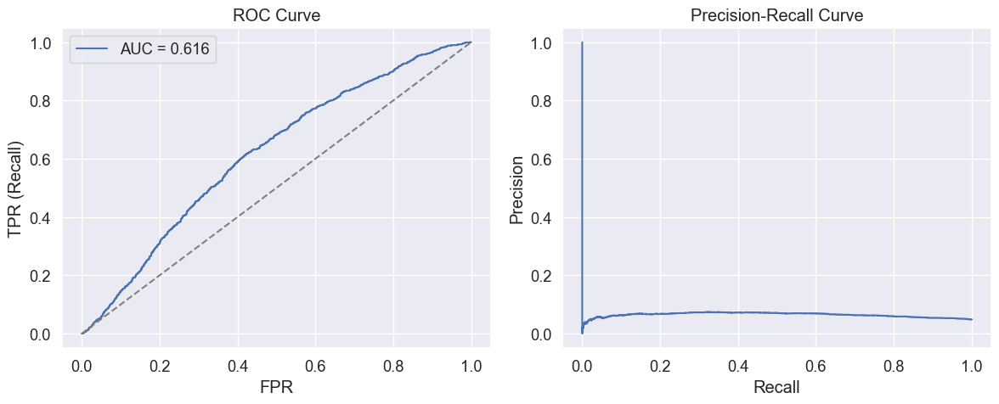
Top 5 thresholds según F1:
| threshold | accuracy | precision | recall | f1 | |
|---|---|---|---|---|---|
| 54 | 0.55 | 0.695421 | 0.072404 | 0.450640 | 0.124763 |
| 51 | 0.52 | 0.608895 | 0.069438 | 0.574040 | 0.123890 |
| 53 | 0.54 | 0.668560 | 0.070847 | 0.485375 | 0.123647 |
| 50 | 0.51 | 0.580889 | 0.068708 | 0.613346 | 0.123573 |
| 55 | 0.56 | 0.723646 | 0.072724 | 0.403108 | 0.123219 |
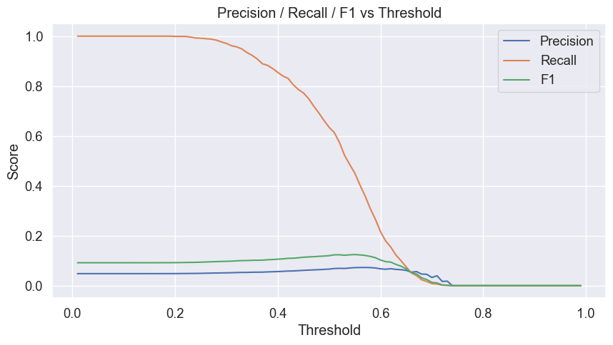
Coeficientes y Odds Ratios (ordenados por efecto):
| feature | coef | odds_ratio | |
|---|---|---|---|
| 4 | acousticness | -0.477654 | 0.620237 |
| 0 | danceability | 0.286579 | 1.331863 |
| 1 | energy | -0.180861 | 0.834551 |
| 3 | tempo | -0.091499 | 0.912562 |
| 2 | valence | 0.005859 | 1.005876 |
Mejor umbral por F1: 0.550 con F1=0.125
Ejemplo de umbral con recall ≥ 0.8: {'threshold': 0.43, 'accuracy': 0.37181858212241303, 'precision': 0.058992902102584704, 'recall': 0.8053016453382084, 'f1': 0.10993261791864238}
Características de TN, FP, FN, TP.
Una caraterística que muestran estos resultados es que, por ejemplo, un alto FN significa que el modelo no detecta muchos hits o éxitos.
Por tanto, si Spotify quiere maximizar descubrimiento de posibles hits se debe priorizar Recall, es decir, capturar la mayor cantidad de canciones con potencial. Pero si no quisiera gastar presupuesto en música que no pegue o sea la más popular en listas, priorizar Precision cuando quiera promocionar, es decir, que tenga alta probabilidad de éxito.
Por otro lado, los coeficientes positivos aumentan la popularidad mientras que los coeficientes negativos la reducen.
Una característica fundamental que va directamente ligada a los usuarios, y que puede incremetar no solo la popularidad del artista, sino también de la app, es la segmentación de usuarios porque combina predisposición de track con perfiles de usuarios para darles recomendaciones más efectivas y que les guste. Ahora, si la predicción de popularidad ayuda a reducir el gasto en promoción en tracks sin potencial, mejora RO, por lo que usar el modelo para proponer experimentos (como colocar X canciones en una playlist) y medir lift de streams, así ayuda a entender y corregir sesgos algorítmicos.
Pero para cumplir con esta idea faltarían comportamientos externos por analizar, como fecha de lanzamiento, de marketing como las campañas publicitarias y propagandas, metadatos geográficos o demográficos de audiencia.
# Resumen de hallazgos
print("\nResumen de hallazgos:")
print(f"- Cantidad total de géneros únicos: {df['track_genre'].nunique()}")
print(f"- Género más popular en promedio: {popularity_by_genre.idxmax()} ({popularity_by_genre.max():.2f})")
print(f"- Género menos popular en promedio: {popularity_by_genre.idxmin()} ({popularity_by_genre.min():.2f})")
print("- Variables más correlacionadas con popularidad:")
print(corr.sort_values(ascending=False).head(5))
Resumen de hallazgos:
- Cantidad total de géneros únicos: 114
- Género más popular en promedio: pop-film (59.28)
- Género menos popular en promedio: iranian (2.22)
- Variables más correlacionadas con popularidad:
loudness 0.047371
danceability 0.034412
tempo 0.012180
energy -0.002444
liveness -0.005658
Name: popularity, dtype: float64
Concluimos que hay mucha diversidad musical hoy en día pues hay 114 géneros bien representados. Contiene una distribución balanceada de géneros y una distribución asimétrica de popularidad, lo que sugiere que todos los géneros tienen oportunidad pero pocos alcanzan esa máxima popularidad.
Este EDA representa la diversidad musical actual. Captura la dinámica competitiva de la industria que ofrece oportunidades para ver patrones en ciertos géneros, poder predecir un éxito musical y optimizar recomendaciones.
Los hallazgos no solo muestras las preferencias de las personas del mundo, sino que también las herramientas para los artistas, productores y plataformas digitales o streaming necesitas pues la música va a seguir creciendo y con ello tenemos muchos aspectos con los cuales poder seguir investigando las futuras tendencias.
##Aplicación de Modelos
Aplicación de Modelos#
Ahora presentamos la ejecución de los modelos aplicado en clase en nuestro proyecto:
from sklearn.model_selection import train_test_split, GridSearchCV, StratifiedKFold
from sklearn.preprocessing import StandardScaler, OneHotEncoder
from sklearn.impute import SimpleImputer
from sklearn.linear_model import LogisticRegression
from sklearn.metrics import classification_report, confusion_matrix, roc_auc_score, accuracy_score, recall_score, roc_curve, auc
from scipy.sparse import hstack
from imblearn.over_sampling import SMOTE
numeric_features = [
'duration_ms', 'danceability', 'energy', 'key', 'loudness', 'mode',
'speechiness', 'acousticness', 'instrumentalness', 'liveness',
'valence', 'tempo', 'time_signature'
]
categorical_features = ['explicit', 'track_genre']
dataset_clean = df.copy()
dataset_clean['HighPopularity'] = (dataset_clean['popularity'] >= 70).astype(int)
X = dataset_clean[numeric_features + categorical_features]
y = dataset_clean['HighPopularity']
X_train, X_test, y_train, y_test = train_test_split(
X, y, test_size=0.2, random_state=42, stratify=y
)
# númericas
num_imputer = SimpleImputer(strategy='median')
X_train_num = num_imputer.fit_transform(X_train[numeric_features])
X_test_num = num_imputer.transform(X_test[numeric_features])
scaler = StandardScaler()
X_train_num_scaled = scaler.fit_transform(X_train_num)
X_test_num_scaled = scaler.transform(X_test_num)
# categóricas
cat_imputer = SimpleImputer(strategy='most_frequent')
X_train_cat = cat_imputer.fit_transform(X_train[categorical_features])
X_test_cat = cat_imputer.transform(X_test[categorical_features])
encoder = OneHotEncoder(handle_unknown='ignore')
X_train_cat_encoded = encoder.fit_transform(X_train_cat)
X_test_cat_encoded = encoder.transform(X_test_cat)
# numéricas + categóricas
X_train_final = hstack([X_train_num_scaled, X_train_cat_encoded])
X_test_final = hstack([X_test_num_scaled, X_test_cat_encoded])
X_train_dense = X_train_final.toarray()
X_test_dense = X_test_final.toarray()
print(f"Tamaño original: {X_train.shape}")
print(f"Proporción de clases: {np.bincount(y_train)/len(y_train)}")
# GridSearchCV personalizado con SMOTE en cada fold para regresión logística
param_grid = {
"C": [0.01, 0.1, 1, 10, 100],
"penalty": ['l2', None]
}
# CV estratificado
cv = StratifiedKFold(n_splits=5, shuffle=True, random_state=42)
best_params = {}
best_score = 0
print("Grid search de regresión logística:")
for C in param_grid['C']:
for penalty in param_grid['penalty']:
if penalty == 'none' and C != 1.0:
continue
fold_scores = []
for train_idx, val_idx in cv.split(X_train_dense, y_train):
X_fold_train, X_fold_val = X_train_dense[train_idx], X_train_dense[val_idx]
y_fold_train, y_fold_val = y_train.iloc[train_idx], y_train.iloc[val_idx]
# Aplicamos Smote solo en el entrenamiendo en e fold
smote = SMOTE(sampling_strategy=0.5, random_state=42)
X_fold_res, y_fold_res = smote.fit_resample(X_fold_train, y_fold_train)
logreg = LogisticRegression(
C=C,
penalty=penalty,
solver='saga' if penalty == 'l1' else 'lbfgs',
max_iter=1000,
random_state=42
)
logreg.fit(X_fold_res, y_fold_res)
y_pred_val = logreg.predict(X_fold_val)
score = recall_score(y_fold_val, y_pred_val)
fold_scores.append(score)
mean_score = np.mean(fold_scores)
print(f"C={C}, penalty={penalty}: Recall CV = {mean_score:.4f}")
if mean_score > best_score:
best_score = mean_score
best_params = {'C': C, 'penalty': penalty}
print(f"\nMejores parámetros: {best_params}")
print(f"Mejor recall (CV): {best_score:.4f}")
# Aplicamos Smote en el entrenamiendo completo para el modelo final
smote_final = SMOTE(sampling_strategy=0.5, random_state=42)
X_train_res, y_train_res = smote_final.fit_resample(X_train_dense, y_train)
print(f"Tamaño con SMOTE: {X_train_res.shape}")
best_logreg = LogisticRegression(
**best_params,
solver='saga' if best_params['penalty'] == 'l1' else 'lbfgs',
max_iter=1000,
random_state=42
)
best_logreg.fit(X_train_res, y_train_res)
y_pred = best_logreg.predict(X_test_dense)
y_pred_proba = best_logreg.predict_proba(X_test_dense)[:, 1]
print("Evaluación de regresión logística")
print("\nAccuracy en test:", accuracy_score(y_test, y_pred))
print("\nMatriz de confusión:\n", confusion_matrix(y_test, y_pred))
print("\nReporte de clasificación:\n", classification_report(y_test, y_pred))
print("ROC AUC:", roc_auc_score(y_test, y_pred_proba))
# curva ROC
fpr, tpr, thresholds = roc_curve(y_test, y_pred_proba)
roc_auc = auc(fpr, tpr)
plt.figure(figsize=(10, 6))
plt.plot(fpr, tpr, color='darkorange', lw=2,
label=f'Curva ROC (AUC = {roc_auc:.3f})')
plt.plot([0, 1], [0, 1], color='navy', lw=2, linestyle='--', label='Línea base (AUC = 0.5)')
plt.xlim([0.0, 1.0])
plt.ylim([0.0, 1.05])
plt.xlabel('Tasa de Falsos Positivos (FPR)')
plt.ylabel('Tasa de Verdaderos Positivos (TPR)')
plt.title('Curva ROC - Regresión Logística con SMOTE')
plt.legend(loc="lower right")
plt.grid(True, alpha=0.3)
# punto óptimo
distances = np.sqrt(fpr**2 + (1-tpr)**2)
optimal_idx = np.argmin(distances)
optimal_threshold = thresholds[optimal_idx]
plt.plot(fpr[optimal_idx], tpr[optimal_idx], 'ro', markersize=8,
label=f'Punto óptimo (threshold={optimal_threshold:.3f})')
plt.legend()
plt.tight_layout()
plt.show()
print(f"\nUmbral óptimo: {optimal_threshold:.3f}")
y_pred_optimal = (y_pred_proba >= optimal_threshold).astype(int)
print("\nInforme de Clasificación con umbral óptimo:")
print(classification_report(y_test, y_pred_optimal))
print("Matriz de confusión con umbral óptimo:")
print(confusion_matrix(y_test, y_pred_optimal))
Tamaño original: (90840, 15)
Proporción de clases: [0.95184941 0.04815059]
Grid search de regresión logística:
C=0.01, penalty=l2: Recall CV = 0.5770
C=0.01, penalty=None: Recall CV = 0.6733
C=0.1, penalty=l2: Recall CV = 0.6562
C=0.1, penalty=None: Recall CV = 0.6733
C=1, penalty=l2: Recall CV = 0.6717
C=1, penalty=None: Recall CV = 0.6733
C=10, penalty=l2: Recall CV = 0.6728
C=10, penalty=None: Recall CV = 0.6733
C=100, penalty=l2: Recall CV = 0.6731
C=100, penalty=None: Recall CV = 0.6733
Mejores parámetros: {'C': 0.01, 'penalty': None}
Mejor recall (CV): 0.6733
Tamaño con SMOTE: (129699, 129)
Evaluación de regresión logística
Accuracy en test: 0.8321003963011889
Matriz de confusión:
[[18179 3437]
[ 376 718]]
Reporte de clasificación:
precision recall f1-score support
0 0.98 0.84 0.91 21616
1 0.17 0.66 0.27 1094
accuracy 0.83 22710
macro avg 0.58 0.75 0.59 22710
weighted avg 0.94 0.83 0.87 22710
ROC AUC: 0.8621771933783223
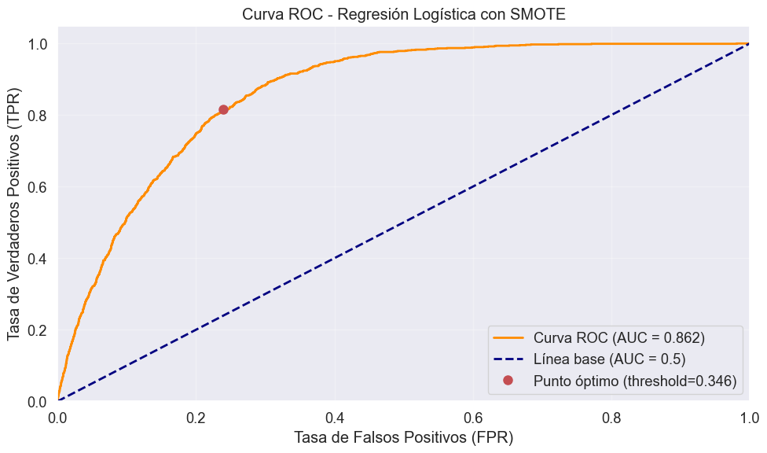
Umbral óptimo: 0.346
Informe de Clasificación con umbral óptimo:
precision recall f1-score support
0 0.99 0.76 0.86 21616
1 0.15 0.82 0.25 1094
accuracy 0.76 22710
macro avg 0.57 0.79 0.55 22710
weighted avg 0.95 0.76 0.83 22710
Matriz de confusión con umbral óptimo:
[[16442 5174]
[ 202 892]]
Para el modelo de regresión logística, ajustado con la técnica de sobremuestreo SMOTE para balancear las clases, alcanzó un desempeño adecuado. Se evidenció un fuerte desbalanceo con aproximadamente un 95% de observaciones a la clase negativa y solo un 5% a la clase positiva.
Por ello, se aplicó SMOTE y se realizó una búsqueda de hiperparámetros, para encontrar el mejor modelo correspondido a una regresión logística con C = 0.01 logrando un recall promedio en validación cruzada de 0.6733.
En el conjunto de prueba, el modelo obtuvo una accuracy de 0.83 y un área bajo la curva ROC AUC de 0.862, lo cual refleja una buena capacidad de discriminación entre las clases.
El análisis del reporte de clasificación mostró que con el umbral estándar de 0.5, la clase minoritaria alcanzaba un recall de 0.66 pero con una baja precisión con un 0.17.
Al ajustar el umbral de decisión a 0.346 el recall de la clase positiva aumentó significativamente hasta 0.82, así el modelo logra detectar la gran mayoría de los casos. Pero el ajuste lo que hace es una disminución en la precisión y en la exactitud.
Por ello, estas modificaciones prioriza la identificación de las canciones exitosas y así apoyar decisiones en las que resulta más dificil no dejar escapar canciones que tengan un tipo de potencial y no eliminarlas.
Ahora veamos el modelo KNN
import pandas as pd
import numpy as np
from sklearn.model_selection import train_test_split, GridSearchCV, StratifiedKFold
from sklearn.preprocessing import StandardScaler, OneHotEncoder
from sklearn.impute import SimpleImputer
from sklearn.neighbors import KNeighborsClassifier
from sklearn.metrics import classification_report, confusion_matrix, roc_auc_score, accuracy_score, recall_score
from scipy.sparse import hstack
from imblearn.over_sampling import SMOTE
numeric_features = [
'duration_ms', 'danceability', 'energy', 'key', 'loudness', 'mode',
'speechiness', 'acousticness', 'instrumentalness', 'liveness',
'valence', 'tempo', 'time_signature'
]
categorical_features = ['explicit', 'track_genre']
dataset_clean = df.copy()
dataset_clean['HighPopularity'] = (dataset_clean['popularity'] >= 70).astype(int)
X = dataset_clean[numeric_features + categorical_features]
y = dataset_clean['HighPopularity']
X_train, X_test, y_train, y_test = train_test_split(
X, y, test_size=0.2, random_state=42, stratify=y
)
# numéricas
num_imputer = SimpleImputer(strategy='median')
X_train_num = num_imputer.fit_transform(X_train[numeric_features])
X_test_num = num_imputer.transform(X_test[numeric_features])
scaler = StandardScaler()
X_train_num_scaled = scaler.fit_transform(X_train_num)
X_test_num_scaled = scaler.transform(X_test_num)
# categóricas
cat_imputer = SimpleImputer(strategy='most_frequent')
X_train_cat = cat_imputer.fit_transform(X_train[categorical_features])
X_test_cat = cat_imputer.transform(X_test[categorical_features])
encoder = OneHotEncoder(handle_unknown='ignore')
X_train_cat_encoded = encoder.fit_transform(X_train_cat)
X_test_cat_encoded = encoder.transform(X_test_cat)
# numéricas + categóricas
X_train_final = hstack([X_train_num_scaled, X_train_cat_encoded])
X_test_final = hstack([X_test_num_scaled, X_test_cat_encoded])
X_train_dense = X_train_final.toarray()
X_test_dense = X_test_final.toarray()
print(f"Tamaño original: {X_train.shape}")
param_grid = {"n_neighbors": [1,3,5,7,9,11,13,15,17,19,21]}
# CV estratificado
cv = StratifiedKFold(n_splits=5, shuffle=True, random_state=42)
cv_scores = []
for n_neighbors in param_grid['n_neighbors']:
fold_scores = []
for train_idx, val_idx in cv.split(X_train_dense, y_train):
X_fold_train, X_fold_val = X_train_dense[train_idx], X_train_dense[val_idx]
y_fold_train, y_fold_val = y_train.iloc[train_idx], y_train.iloc[val_idx]
smote = SMOTE(sampling_strategy=0.5, random_state=42)
X_fold_res, y_fold_res = smote.fit_resample(X_fold_train, y_fold_train)
knn = KNeighborsClassifier(n_neighbors=n_neighbors)
knn.fit(X_fold_res, y_fold_res)
y_pred_val = knn.predict(X_fold_val)
score = recall_score(y_fold_val, y_pred_val)
fold_scores.append(score)
mean_score = np.mean(fold_scores)
cv_scores.append(mean_score)
print(f"n_neighbors={n_neighbors}: Recall CV = {mean_score:.4f}")
best_n_neighbors = param_grid['n_neighbors'][np.argmax(cv_scores)]
print(f"\nMejor parámetro: n_neighbors={best_n_neighbors}")
print(f"Mejor recall (CV): {np.max(cv_scores):.4f}")
smote_final = SMOTE(sampling_strategy=0.5, random_state=42)
X_train_res, y_train_res = smote_final.fit_resample(X_train_dense, y_train)
print(f"Tamaño con SMOTE: {X_train_res.shape}")
best_knn = KNeighborsClassifier(n_neighbors=best_n_neighbors)
best_knn.fit(X_train_res, y_train_res)
y_pred = best_knn.predict(X_test_dense)
y_pred_proba = best_knn.predict_proba(X_test_dense)[:, 1]
print("\nAccuracy en test:", accuracy_score(y_test, y_pred))
print("\nMatriz de confusión:\n", confusion_matrix(y_test, y_pred))
print("\nReporte de clasificación:\n", classification_report(y_test, y_pred))
print("ROC AUC:", roc_auc_score(y_test, y_pred_proba))
Tamaño original: (90840, 15)
n_neighbors=1: Recall CV = 0.4220
n_neighbors=3: Recall CV = 0.5590
n_neighbors=5: Recall CV = 0.6353
n_neighbors=7: Recall CV = 0.6827
n_neighbors=9: Recall CV = 0.7142
n_neighbors=11: Recall CV = 0.7350
n_neighbors=13: Recall CV = 0.7483
n_neighbors=15: Recall CV = 0.7574
n_neighbors=17: Recall CV = 0.7622
n_neighbors=19: Recall CV = 0.7661
n_neighbors=21: Recall CV = 0.7634
Mejor parámetro: n_neighbors=19
Mejor recall (CV): 0.7661
Tamaño con SMOTE: (129699, 129)
Accuracy en test: 0.7647291941875826
Matriz de confusión:
[[16517 5099]
[ 244 850]]
Reporte de clasificación:
precision recall f1-score support
0 0.99 0.76 0.86 21616
1 0.14 0.78 0.24 1094
accuracy 0.76 22710
macro avg 0.56 0.77 0.55 22710
weighted avg 0.94 0.76 0.83 22710
ROC AUC: 0.8540952931811632
El modelo KNN ajustado con SMOTE mostró que el mejor desempeño se alcanzó con k = 19 con un recall promedio en validación cruzada de 0.7661.
En el conjunto de prueba el modelo alcanzó un accuracy de 0.7647 y un área bajo la curva ROC (AUC) de 0.854, es decir, buena capacidad de discriminación entre clases.
La matriz de confusión muestra que el modelo detectó 850 de los 1,094 casos positivos, lo que significa que identifica la mayoría de las canciones potencialmente exitosas. Pero la precisión de la clase positiva fue baja dando un número elevado de falsos positivos.
Por ello, el modelo KNN logra identificar la clase minoritaria y la detección de canciones exitosas. Y al haber una baja precisión muchas de las canciones clasificadas como exitosas no lo son en realidad. Comparándolo con la regresión logística ambos modelos obtienen resultados similares, pero la regresión logística da un desempeño más balanceado, mientras que KNN tiende a elevar precisión del recall.
cm = confusion_matrix(y_test, y_pred)
plt.figure(figsize=(6, 5))
sns.heatmap(cm, annot=True, fmt='d', cmap='Blues',
xticklabels=['No Popular (0)', 'Popular (1)'],
yticklabels=['No Popular (0)', 'Popular (1)'])
plt.title(f"Matriz de Confusión (k={best_n_neighbors})")
plt.xlabel("Predicho")
plt.ylabel("Real")
plt.tight_layout()
plt.show()
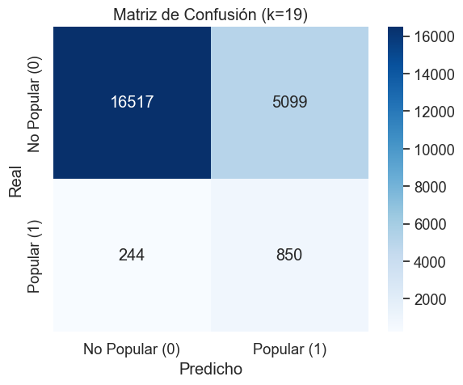
La matriz de confusión obtenida para el modelo KNN con k = 19 muestra un buen desempeño en la identificación de canciones populares. De un total de 22,710 observaciones, el modelo clasificó correctamente 16,517 canciones no populares y 850 canciones populares. Pero hay 5,099 canciones fueron clasificadas incorrectamente como populares mientras que 244 canciones populares no fueron detectadas.
Estos resultados dieron un recall de 0.78 para la clase positiva, lo que indica que el modelo identifica la mayoría de las canciones populares, aunque la precisión de esa clase es baja con 0.14, reflejando que las canciones predichas como populares no lo son realmente.
Por ello, la matriz confirma que el modelo KNN da la detección de la clase minoritaria y la mayor parte de las canciones populares, aunque con un poquito de falsos positivos.
import pandas as pd
import numpy as np
import matplotlib.pyplot as plt
import seaborn as sns
from sklearn.decomposition import PCA
from sklearn.metrics import roc_curve, auc
# Aplicar PCA a los datos de entrenamiento procesados
pca = PCA(n_components=2)
X_pca = pca.fit_transform(X_train_dense)
plt.figure(figsize=(12, 5))
# Subplot 1: Datos originales
plt.subplot(1, 2, 1)
scatter1 = plt.scatter(X_pca[:, 0], X_pca[:, 1], c=y_train, cmap='viridis', alpha=0.6, s=10)
plt.title('Datos Originales')
plt.xlabel('Componente Principal 1')
plt.ylabel('Componente Principal 2')
plt.legend(handles=scatter1.legend_elements()[0],
labels=['No Popular (0)', 'Popular (1)'])
plt.colorbar(label='Popularidad')
plt.grid(True, alpha=0.3)
# Subplot 2: Datos con SMOTE
plt.subplot(1, 2, 2)
X_res_pca = pca.transform(X_train_res)
scatter2 = plt.scatter(X_res_pca[:, 0], X_res_pca[:, 1], c=y_train_res, cmap='viridis', alpha=0.6, s=10)
plt.title('Datos con SMOTE')
plt.xlabel('Componente Principal 1')
plt.ylabel('Componente Principal 2')
plt.legend(handles=scatter2.legend_elements()[0],
labels=['No Popular (0)', 'Popular (1)'])
plt.colorbar(label='Popularidad')
plt.grid(True, alpha=0.3)
plt.tight_layout()
plt.show()
# Entrenar KNN en el espacio PCA de datos con SMOTE
knn_pca = KNeighborsClassifier(n_neighbors=best_n_neighbors)
knn_pca.fit(X_res_pca, y_train_res)
x_min, x_max = X_res_pca[:, 0].min() - 1, X_res_pca[:, 0].max() + 1
y_min, y_max = X_res_pca[:, 1].min() - 1, X_res_pca[:, 1].max() + 1
xx, yy = np.meshgrid(np.linspace(x_min, x_max, 200),
np.linspace(y_min, y_max, 200))
# Predecir en el meshgrid
Z = knn_pca.predict(np.c_[xx.ravel(), yy.ravel()])
Z = Z.reshape(xx.shape)
plt.figure(figsize=(10, 8))
plt.contourf(xx, yy, Z, alpha=0.3, cmap='viridis')
scatter = plt.scatter(X_res_pca[:, 0], X_res_pca[:, 1], c=y_train_res, cmap='viridis',
alpha=0.6, s=10, edgecolor='k')
plt.title(f'Fronteras de Decisión KNN (k={best_n_neighbors})')
plt.xlabel('Componente Principal 1')
plt.ylabel('Componente Principal 2')
plt.legend(handles=scatter.legend_elements()[0],
labels=['No Popular (0)', 'Popular (1)'])
plt.colorbar(label='Popularidad')
plt.grid(True, alpha=0.3)
plt.show()
# Curva ROC
fpr, tpr, _ = roc_curve(y_test, y_pred_proba)
roc_auc = auc(fpr, tpr)
plt.figure(figsize=(8, 6))
plt.plot(fpr, tpr, color='darkorange', lw=2, label=f'ROC curve (AUC = {roc_auc:.3f})')
plt.plot([0, 1], [0, 1], color='navy', lw=2, linestyle='--', label='Aleatorio')
plt.xlim([0.0, 1.0])
plt.ylim([0.0, 1.05])
plt.xlabel('Tasa de Falsos Positivos')
plt.ylabel('Tasa de Verdaderos Positivos')
plt.title('Curva ROC')
plt.legend(loc="lower right")
plt.grid(True, alpha=0.3)
plt.show()
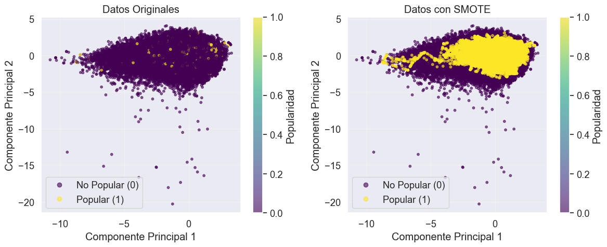
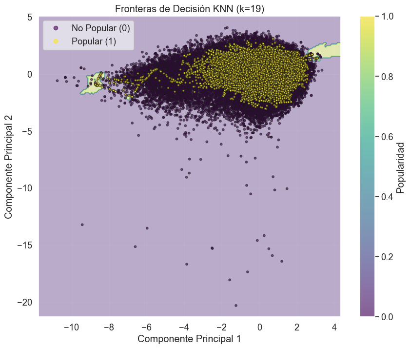
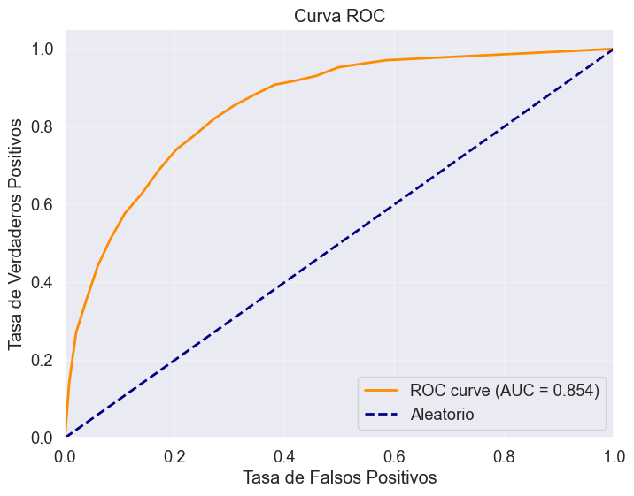
En la primera gráfica se comparan los datos originales con los datos balanceados mediante SMOTE, se observa el desbalance de clases inicial. En los datos originales la clase No Popular es la que predomina, mientras que la clase Popular tiene un número reducido de instancias, lo que genera problema para el modelo al momento de aprender patrones.
Luego de aplicar el SMOTE se logra un balance entre ambas clases, la clase minoritaria obtiene mayor representación en el conjunto de entrenamiento y así identificar con mayor precisión los patrones asociados a esta categoría y mejora la métrica de recall.
Y la curva ROC muestra un AUC = 0.854 que indica que el modelo tiene una alta capacidad de discriminación entre las clases. La curva se ubica muy por encima de la línea aleatoria que confirma que el rendimiento del modelo es mejor que el azar.
Así, la aplicación de SMOTE mejora el desempeño del modelo en la detección de las canciones populares, logrando un equilibrio entre las clases y obteniendo un modelo con buen nivel.